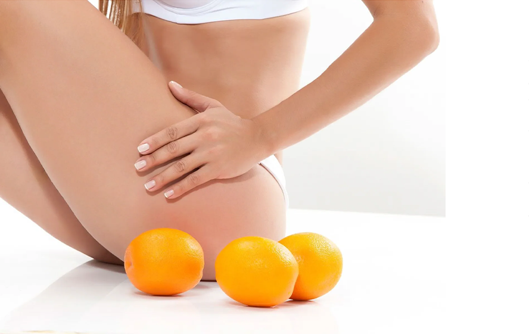

셀룰라이트란 무엇이고, 무엇 때문에 생기는 것일까?
셀룰라이트는 피하지방에 의해 결합조직이 변형되는 것입니다. 피부가 울퉁불퉁해지므로 오렌지의 껍질에 비유되기도 합니다. 잘 보이지 않는 것부터 넓고 심각한 것까지 양상이 다양합니다. 셀룰라이트는 자연스러운 현상이고 몸에 해롭지 않지만, 많은 여성이 보기 싫어하고 제거하기 원하며 최소 줄여 보고자 합니다. 다음과 같이 관련 요인이 다양하여, 발생원인이 명확하지 않을 때가 있습니다. 탈수 증상, 잘못된 다이어트, 느린 신진대사, 운동 부족, 호르몬 변화 , 높은 체지방 비율, 특정 유전자 구조
셀룰라이트가 생기는 일반적인 부위
셀룰라이트는 주로 허벅지, 엉덩이, 아랫배, 골반 주변에 잘 생깁니다. 비만일 때 더 잘 생기는 경향이 있지만 어떤 체형이든 셀룰라이트가 생길 수 있고, 여성의 10명 중 9명이 살면서 셀룰라이트를 신체의 일부 부위에서 경험하게 됩니다.
생활 습관이 셀룰라이트에 어떤 영향을 줄까
많은 사람들이 셀룰라이트가 생활 습관에 실로 많은 영향을 받는다는 것을 인지하지 못합니다. 많이 움직이고 건강한 식습관을 가지고 있다면 셀룰라이트는 거의 보이지 않을 것이며, 그렇지 않다면 셀룰라이트가 어떤 형태로든 있을 것입니다! 스트레스를 많이 받는 생활 습관은 셀룰라이트 생성과 관련된 화합물을 증가시키는 반면에 규칙적인 운동과 건강한 식습관은 셀룰라이트가 덜 보이게 하며 심지어 셀룰라이트가 생기는 것을 방지하는 데 도움이 된다는 것이 입증되었습니다.
어떤 사람에게 셀룰라이트가 더 잘 생길까?
여성, 셀룰라이트 가족력이 있는 사람, 정적인 생활 습관을 가지고 있는 사람, 피부 탄력을 잃어 가는 고령자, 비만 증세가 있는 사람
여성이 남성보다 셀룰라이트 문제를 더 많이 겪습니다
여성이 골반과 허벅지 주변에 지방이 더 많기 때문에, 남성보다 셀룰라이트에 더 많이 시달립니다. 게다가 여성은 결합조직을 더 적게 가지고 있어 셀룰라이트가 더 잘 생깁니다.